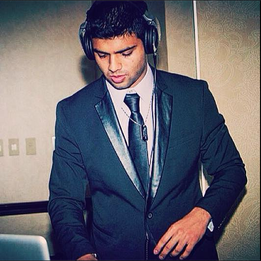

About Me
My name is Navin Udiaver. I am currently a student at The University of Texas at Austin, studying Economics and Mathematics with a minor in CS. I am concurrently pursuing The Coding Bootcamp at UT Austin in order to hone my skills as a Full Stack Developer.
To me, the ability to code requires a substantial balance between analytical skills and creativity. A career in this field would not only be something I would genuinely work hard towards, but an environment I would be very passionate to work in. I hope to work as a Front End Developer by the end of the program while also pursuing Freelance work on the side.